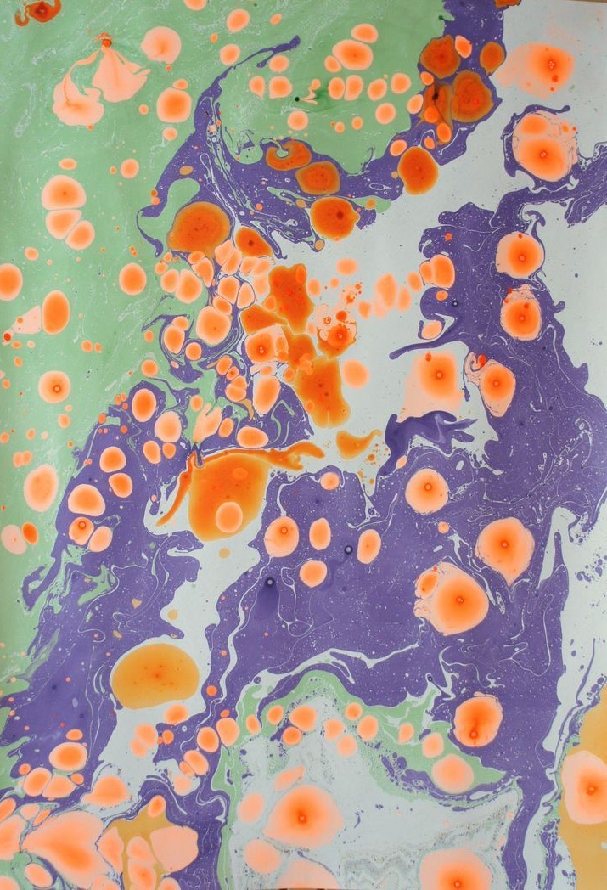

A British think tank for advancing
something about science & tech.
Britain has world-class researchers and inadequate infrastructure around them. Science Works builds the institutions, tools, and analysis the research system is missing — sitting between government, philanthropy, and the frontier of science itself.

The UK's research ecosystem is unusually homogeneous and slow to evolve: it relies heavily on universities for work that, in other countries, is spread across a much wider range of institutional forms. We are working on how to inject diversity and dynamism into the sector – mapping the institutional models available to funders and policymakers, strengthening the state's capacity to assess and support proposals for new organisations, and incubating new organisational forms where we are best placed to do so.
AI is poised to change what it means to be a scientist, but the UK risks compounding existing dysfunctions rather than unlocking the gains: much of the scientific record remains invisible, research software is undervalued, and the infrastructure for AI-enabled discovery is unevenly available. We are developing an ambitious British agenda for AI in science – covering data, software, automation, and the institutional changes needed to make them count – alongside concrete work on the "dark data" problem (where much of the data that arise from research are not captured or shared, undermining the validity and completeness of the scientific record on which AI models are trained).
Scientists lack modern and interoperable software tools for undertaking research in the age of intelligence. We are building and testing new software tools to address this gap.
Decisions about what to fund, where to build, and which capabilities to grow are made with incomplete data intelligence about the UK’s strengths, opportunities, weaknesses and threats. We are building open analytics – drawing on global research data to map capabilities and features of the UK’s R&D system in detail – to supply an open intelligence layer for funders and governments.
Billions are spent each year managing risk out of research, and researchers spend a growing share of their time fitting into narrow bureaucratic requirements rather than doing their most impactful science. We are working on practical reforms to cut administrative friction, recognise and support novel or unusual capability, and test alternative funding and assessment mechanisms for research.